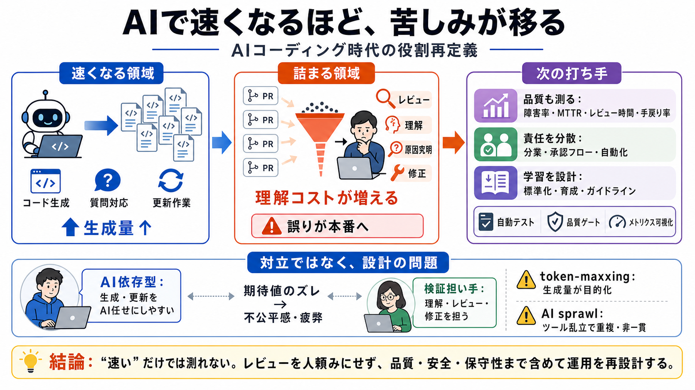

Software Engineers Face an AI 'Identity Crisis,' VC Partner Says - Business Insider
# Software engineers are facing an 'identity crisis bordering on depression,' Menlo Ventures partner says. As companies …

AIで速くなるほど、苦しみが移る
AIコーディング支援が普及すると、作る工数より「理解・レビュー・修正」がボトルネック化しやすい。結果として、エンジニアの価値観と役割が揺れる。
増えるのは「コード量」だけ？
生成が簡単になるほど、プルリクエストの量・変更頻度が上がる。すると判断の工程（安全性・意図・保守性）が律速になり、人間のレビュー負担が増える。
作る鍛冶場→検品工場
AIが「ものを作る」役を担うと、人は監督・検証側へ回りやすい。職能（craft）が“消える”のではなく“役割が寄る”ことで、体験が変わる。
生成が増えると、検証が詰まる
AIでアウトプットが増えても、「なぜそうなるか」を人が追えないと、レビューは時間を要しリスクも上がる。品質保証の責任が人間側に集中しやすい。
lazy vs craftsmen
Deedy Das氏は、AIに大きく依存して最小関与で作る人を「lazy」、理解・レビュー・修正を担う経験者を「craftsmen」と位置づける。
二分法が生む分断
生成量が増えるほどレビュー負担が職人側に寄り、理解する責任まで押し付けられると疲弊が進む。価値が“作る”から“検証する”へ移る感覚が、アイデンティティ危機につながる。
全社が同じではない
問題はAI導入そのものではなく、生成量の増加に対して評価・学習・運用設計が追いつかないと起きやすい。特に大規模・長期・人材のばらつきが大きい組織で緊張が増える。
token-maxxing と AI sprawl
生成物を増やすことが目的化すると（token-maxxing）、レビューや検証の待ちが増える。さらにツールが乱立すると（AI sprawl）、重複作業が増え、計測できないままコストが膨らみやすい。
何が“悪い”のか？
記事は「AIを使うことが悪い」とは言っていない。焦点は、生成量が増えたのに対して、レビュー設計・評価指標・運用設計が追いつかない点にある。
“速い”だけでは測れない
AI時代は、障害率・MTTR・レビュー時間・手戻り率など、品質と手戻りを含む定量で実効を確認する必要がある。さらにレビューの分業・自動化・標準化で、責任の集中を減らす。
# Software engineers are facing an 'identity crisis bordering on depression,' Menlo Ventures partner says. As companies …
# Menlo Ventures partner Deedy Das argues AI coding assistants are splitting developers into automators and code-quality…
As the tech landscape rapidly evolves, software engineers find themselves navigating an unprecedented challenge, driven …
Deedy Das, a partner at venture capital firm Menlo Ventures, recently highlighted how the industry push for AI-driven pr…
The vibes around the current AI boom aren’t great, even in the tech industry, according to a lengthy social media post f…